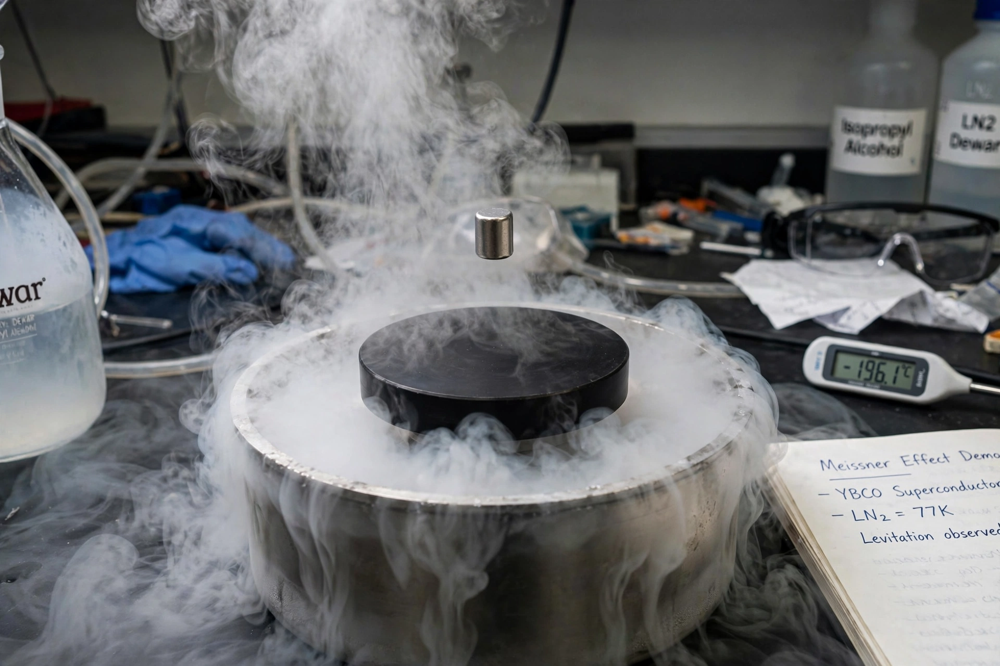

Superconductivity
| Discovered | 1911, Heike Kamerlingh Onnes |
|---|---|
| Phenomena | Zero electrical resistance; Meissner effect |
| Theory | BCS theory (1957) |

[Image: A magnet levitating above a cooled high-temperature superconductor, vapour rising]Superconductivity is a set of physical properties that appear in certain materials when cooled below a characteristic critical temperature: they exhibit exactly zero electrical resistance and expel magnetic fields (the Meissner effect). Superconductors are used in powerful electromagnets (MRI machines, particle accelerators, fusion experiments), sensitive magnetic detectors (SQUIDs) and quantum computing.
The phenomenon was discovered in 1911 by Dutch physicist Heike Kamerlingh Onnes, who found that the resistance of mercury dropped abruptly to zero at 4.2 K. A microscopic theory — BCS theory — was provided in 1957 by John Bardeen, Leon Cooper and John Robert Schrieffer, and the field was transformed again in 1986 by the discovery of high-temperature superconductors among copper oxides.
History and classification
After mercury, superconductivity was found in many metals and alloys, but always below about 30 K — these are now called conventional or low-temperature superconductors. The discovery by Georg Bednorz and K. Alex Müller in 1986 of superconductivity at 35 K in a barium–lanthanum–copper oxide opened the era of high-temperature superconductors; within a year yttrium barium copper oxide (YBCO) reached 92 K, above the boiling point of liquid nitrogen, and mercury-based cuprates later reached 133 K (higher under pressure). Iron-based superconductors (2008) form a second unconventional family. Claims of room-temperature superconductivity at extreme pressures (and in 2023 the widely disputed LK-99 claim) remain unconfirmed for practical purposes.
Theory
In BCS theory, electrons near the Fermi surface form bound pairs (Cooper pairs) through an attractive interaction mediated by lattice vibrations (phonons); the pairs condense into a single quantum state separated from excitations by an energy gap, allowing current to flow without dissipation. Most high-temperature superconductors are not well described by BCS theory — their pairing mechanism is one of the outstanding unsolved problems of condensed-matter physics — and they exhibit an unconventional, probably d-wave, order parameter.
The expulsion of magnetic flux was discovered by Walther Meissner and Robert Ochsenfeld in 1933. Type I superconductors expel flux completely up to a critical field; type II materials (including all high-temperature superconductors) admit quantised flux vortices between lower and upper critical fields, which is what makes high-field magnets possible.
Applications
Superconducting magnets are essential to MRI scanners, the Large Hadron Collider, tokamaks such as ITER, and NMR spectrometers. Other applications include maglev trains, SQUID magnetometers, superconducting qubits for quantum computers, fault-current limiters and prototype power cables; friction from cost of cooling limits wider use.